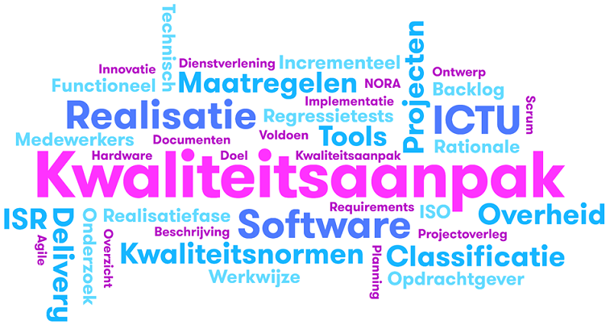

Samenhang voorfaseproducten
![Relaties tussen producten: Projectstartarchitectuur (PSA), business impact analysis (BIA) en privacy impact assessment (PIA) zijn input voor de voorfase. Functionele eisen (FE), niet-functionele eisen (NFE), informatiebeveiligingsplan (IB), backlog (BL), ontwerp en architectuur (O&A), kwaliteitsplan (KP) en testplannen (TP) zijn de output van de voorfase. De relaties tussen de verschillende producten zijn als volgt. De projectstartarchitectuur vormt input voor functionele eisen en niet-functionele eisen. De business impact analyse vormt input voor de niet-functionele eisen en informatiebeveiligingsplan. De privacy impact analyse vormt input voor de niet-functionele eisen en het informatiebeveiligingsplan. De functionele eisen vormen input voor de backlog en voor ontwerp en architectuur. De niet-functionele eisen vormen input voor backlog, ontwerp en architectuur en kwaliteitsplan. Het informatiebeveiligingsplan vormt input voor ontwerp en architectuur en kwaliteitsplan. De backlog en ontwerp en architectuur, tenslotte, zijn input voor de testplannen.](relaties-tussen-producten.png)

ICTU Kwaliteitsaanpak Softwareontwikkeling
Versie 2.5.0-rc.1, 10-02-2023
De overheid is in hoge mate afhankelijk van informatiesystemen voor de uitvoering van haar taken. Veel van die informatiesystemen zijn dusdanig specifiek dat de benodigde software “op maat” gemaakt moet worden. De totstandkoming van op maat gemaakte software is meestal een complex proces, waarin vele belangen en behoeften worden afgewogen en afgezet tegen de mogelijkheden die technologie biedt. Eenmaal operationeel zal een informatiesysteem verantwoord onderhouden moeten worden; behoeften en technologie veranderen in de loop van de tijd.
Overheidsprojecten waarin software wordt ontwikkeld of onderhouden kampen nog vaak met vertraging, budgetoverschrijding of een eindresultaat met te lage kwaliteit. Zo concludeerde de commissie-Elias in haar eindrapport: "De Rijksoverheid heeft haar ICT (Informatie- en communicatietechnologie)-projecten niet onder controle". Eén van de fundamentele problemen is dat de risico's, die inherent zijn aan softwareontwikkeling, door organisaties nog onvoldoende worden herkend, erkend en gemitigeerd. Dit terwijl de risico's bij de ontwikkeling van software, binnen het ICT-domein, algemeen bekend zijn en er ook voor veel risico's passende maatregelen bestaan.
ICTU heeft jarenlange ervaring met het realiseren van software en past de opgedane ervaring toe bij de ontwikkeling van nieuwe software. Die ervaring is vastgelegd in een werkwijze, deze “ICTU Kwaliteitsaanpak Softwareontwikkeling”, die telkens wordt aangepast en aangevuld op basis van de praktijk.
ICTU is ervan overtuigd dat het bouwen van duurzame software, die goed aansluit bij de behoeften van gebruikers en andere belanghebbenden, bijdraagt aan betere informatiesystemen en een betere dienstverlening door de overheid. Dienstverlening die betrouwbaar moet zijn voor burgers, bedrijven en ambtenaren. Om samen met opdrachtgevers passende oplossingen te realiseren ontwikkelt ICTU daarom software volgens een agile proces. En om de duurzaamheid en betrouwbaarheid te bevorderen besteedt ICTU standaard aandacht aan beveiliging, privacy, performance, gebruikskwaliteit en toegankelijkheid. De Kwaliteitsaanpak dient daarvoor als leidraad, maar de aanpak voorziet ook in mogelijkheden om het project en het eindproduct aan te passen aan de specifieke situatie.
Om projecten, die software realiseren volgens de Kwaliteitsaanpak, efficiënt en effectief te ondersteunen, heeft ICTU twee gespecialiseerde afdelingen in het leven geroepen. Deze afdelingen staan projecten bij door middel van kennis, menskracht en technische hulpmiddelen. Zo profiteren projecten van schaalgrootte en hergebruik van inzichten.
Met behulp van de ICTU Kwaliteitsaanpak Softwareontwikkeling heeft ICTU samen met andere overheden inmiddels enige tientallen projecten succesvol uitgevoerd. ICTU wil deze aanpak graag aanvullen met de ervaringen en geleerde lessen van andere organisaties en deze overdraagbaar maken en breder uitdragen. Om die reden stelt ICTU deze Kwaliteitsaanpak aan iedereen beschikbaar via https://www.ictu.nl/kwaliteitsaanpak en heeft zij, samen met normalisatie-instituut NEN en partijen uit overheid en markt, een praktijkrichtlijn “Risicobeheersing bij ontwikkeling en onderhoud van maatwerksoftware” (NPR 5326:2019) gepubliceerd, die mede is gebaseerd op de ICTU Kwaliteitsaanpak Softwareontwikkeling.
De ICTU Kwaliteitsaanpak Softwareontwikkeling heeft drie doelstellingen:
De Kwaliteitsaanpak zelf is geformuleerd in de vorm van maatregelen die elke software-ontwikkelende organisatie kan treffen om risico's van softwareontwikkeling te mitigeren en de kans op succesvolle softwareontwikkelprojecten te vergroten. De maatregelen zijn gebaseerd op geleerde lessen uit de praktijk van ICTU.
De Kwaliteitsaanpak is een evoluerende aanpak, gebaseerd op de ervaringen die ICTU continu opdoet in de projecten waarin ICTU samen met opdrachtgevers maatwerksoftware ontwikkelt en onderhoudt. ICTU hanteert daarbij de vuistregel dat als tenminste 80% van de projecten minstens 80% van de tijd een bepaalde werkwijze hanteren, voor die werkwijze een maatregel in de Kwaliteitsaanpak wordt opgenomen. Maar het kan ook voorkomen dat maatregelen om andere redenen landen in de Kwaliteitsaanpak; denk aan het toegankelijk maken van software dat wettelijk verplicht is.
De maatregelen vormen het startpunt voor de aanpak van ieder ICTU-softwareproject, waarbij ruimte wordt geboden voor variatie of alternatieve invulling. Bijvoorbeeld stelt de Kwaliteitsaanpak: software wordt minimaal bij iedere grote release of tenminste twee keer per jaar onderworpen aan een beveiligingstest door beveiligingsexperts die ICTU daarvoor inhuurt (zie M26: Het project laat de beveiliging van het ontwikkelde product periodiek beoordelen). Een alternatief is dat de opdrachtgever de verantwoordelijkheid neemt voor het laten uitvoeren van beveiligingstests. Hierover maakt de projectleider nadere afspraken met de opdrachtgever. De Kwaliteitsaanpak is dus zowel voorschrijvend als beschrijvend. Voorschrijvend omdat ICTU verwacht dat projecten die maatwerksoftware ontwikkelen en onderhouden de aanpak toepassen, en alleen aanpassen als daar een goede reden voor is, en mits dat wettelijk is toegestaan. Tegelijkertijd is de aanpak beschrijvend omdat de meeste maatregelen voortkomen uit de bestaande werkwijzen van de projecten. Zoals blijkt uit de self-assessment die ICTU regelmatig uitvoert op de toepassing van de Kwaliteitsaanpak.
Deze Kwaliteitsaanpak heeft betrekking op de ICTU-projecten waarin software ontwikkeld wordt. De terminologie in dit document is daarop afgestemd en sluit, waar relevant, aan op andere begrippenkaders.
De bijlage Terminologie en afkortingen bevat een lijst met veel gebruikte begrippen en afkortingen. Een aantal begrippen speelt echter een zodanig prominente rol bij het begrip en het gebruik van de Kwaliteitsaanpak, dat ze hieronder nader zijn toegelicht.
Een informatiesysteem is "een samenhangend geheel van gegevensverzamelingen en de daarbij behorende personen, procedures, processen en programmatuur alsmede de voor het informatiesysteem getroffen voorzieningen voor opslag, verwerking en communicatie" (bron: VIR 2007, NORA).
Software is de verzameling instructies die bepalen wat een computer uitvoert en is uiteindelijk wat de gebruiker ziet, ervaart en waarmee hij interacteert. In de dagelijkse praktijk en communicatie van ICTU wordt "programmatuur", uit de vorige definitie, aangeduid met "software".
Vaak kunnen de termen "broncode" en "software" onderling uitgewisseld worden, maar soms is het van belang onderscheid te maken. Broncode is leesbaar voor mensen en drukt de intentie van een programmeur uit. Om een computer broncode te laten "uitvoeren", is een vertaalslag nodig naar voor een computer begrijpelijke instructies. Broncode bij ICTU is bijvoorbeeld geschreven in de programmeertalen Java of C#.
Een softwareontwikkelproject is een project dat de oplevering van software als enige of voornaamste projectresultaat heeft.
Dit document "ICTU Kwaliteitsaanpak Softwareontwikkeling", verder ook aangeduid met 'de Kwaliteitsaanpak', is bedoeld voor software en gerelateerde producten, voor processen waarmee die producten worden gerealiseerd en voor de overkoepelende organisatie waarin op projectbasis wordt gewerkt (ICTU). Dit betekent dat deze Kwaliteitsaanpak betrekking heeft op de drie aspecten van softwareontwikkeling:
De drie aspecten komen hieronder in meer detail aan bod in de vorm van maatregelen die ICTU heeft getroffen om de risico's die samenhangen met softwareontwikkeling te mitigeren. De praktijkrichtlijn “Risicobeheersing bij ontwikkeling en onderhoud van maatwerksoftware” (NPR 5326:2019) beschrijft veelvoorkomende risico's van maatwerksoftwareontwikkeling en adviseert bijbehorende risicobeheersmaatregelen. Bijlage Relatie met NEN NPR 5326 beschrijft hoe de maatregelen in deze Kwaliteitsaanpak samenhangen met de maatregelen die de NPR 5326 adviseert.
De beschrijving van elke maatregel is voorzien van een rationale: waarom behoort de maatregel tot de Kwaliteitsaanpak? Waar mogelijk verwijst de rationale naar maatregelen uit standaarden en richtlijnen die overeenkomen met de door ICTU getroffen maatregelen.
Bij de omschrijving van de maatregelen is gebruik gemaakt van de volgende rollen om aan te geven wie verantwoordelijkheid draagt voor het uitvoeren van de maatregelen:
Projecten bij ICTU die software ontwikkelen en/of onderhouden volgens deze Kwaliteitsaanpak, kunnen ondersteuning krijgen van de afdelingen ICTU Software Diensten (ISD) en ICTU Software Expertise (ISE). ISD levert ontwikkel- en testomgevingen, tools en ondersteunende diensten. ISE levert expertise in de vorm van software delivery managers, kwaliteitsmanagers en software-ontwikkelaars. ISE onderhoudt tevens deze Kwaliteitsaanpak. ISD en ISE zijn niet verantwoordelijk voor de projectuitvoering, maar voor het bieden van expertise en diensten om projecten in staat te stellen efficiënt en effectief volgens de Kwaliteitsaanpak te werken.
De Kwaliteitsaanpak is een evoluerende aanpak, gebaseerd op de ervaringen die ICTU continu opdoet in de projecten waarin ICTU samen met opdrachtgevers maatwerksoftware ontwikkelt en onderhoudt. ICTU hanteert daarbij de vuistregel dat als tenminste 80% van de projecten minstens 80% van de tijd een bepaalde werkwijze hanteren, voor die werkwijze een maatregel in de Kwaliteitsaanpak wordt opgenomen. Maar het kan ook voorkomen dat maatregelen om andere redenen landen in de Kwaliteitsaanpak; denk aan het toegankelijk maken van software dat wettelijk verplicht is.
De maatregelen vormen het startpunt voor de aanpak van ieder ICTU-softwareproject, maar bieden daarbij ruimte voor variatie of alternatieve invulling. Bijvoorbeeld stelt de Kwaliteitsaanpak: software wordt minimaal bij iedere grote release of tenminste twee keer per jaar onderworpen aan een beveiligingstest door beveiligingsexperts die ICTU daarvoor inhuurt (zie M26: Het project laat de beveiliging van het ontwikkelde product periodiek beoordelen). Een alternatief is dat de opdrachtgever de verantwoordelijkheid neemt voor het laten uitvoeren van beveiligingstests. Hierover maakt de projectleider nadere afspraken met de opdrachtgever. De Kwaliteitsaanpak is dus zowel voorschrijvend als beschrijvend. Voorschrijvend omdat ICTU verwacht dat projecten die maatwerksoftware ontwikkelen en onderhouden de aanpak toepassen, en alleen aanpassen als daar een goede reden voor is, en mits dat wettelijk is toegestaan. Tegelijkertijd is de aanpak beschrijvend omdat de meeste maatregelen voor de meeste projecten de meeste tijd van toepassing zijn en worden toegepast. Zoals blijkt uit de self-assessment die ICTU regelmatig uitvoert op de toepassing van de Kwaliteitsaanpak.
Elke release van de Kwaliteitsaanpak heeft een versienummer in de vorm majornummer.minornummer.patchnummer.
De opdrachtgever zorgt dat het project vanaf de start van de voorfase beschikt over:
Als de benodigde informatie niet gereed is bij de start van de voorfase dan maken opdrachtgever en ICTU nadere afspraken over de manier waarop de benodigde informatie nog tijdens de voorfase beschikbaar komt voor het project.
Een projectstartarchitectuur (PSA) is bedoeld om te borgen dat nieuwe ontwikkelingen en veranderingen in samenhang worden gerealiseerd en passen binnen de toekomstig gewenste informatievoorziening. Een PSA bevat in ieder geval de volgende onderwerpen:
Zie https://www.noraonline.nl/wiki/PSA.
In een business impact analysis (BIA) legt de opdrachtgevende organisatie vast hoe belangrijk informatiebeveiliging is voor de eigen bedrijfsvoering/processen. Naast de gevoeligheid voor incidenten komt hierin ook de 'risk appetite' van de organisatie tot uiting: de risico’s die een organisatie bereid is te accepteren. Alleen de opdrachtgevende organisatie zelf kan hierover een uitspraak doen.
In een privacy impact assessment (PIA) legt de opdrachtgevende organisatie vast wat de privacy-gevoeligheid is van de gegevens die in een proces of informatiesysteem worden verzameld en verwerkt. De rechtmatigheid van de verwerking wordt beoordeeld. En de PIA stelt grenzen aan de gegevens die mogen worden verzameld en verwerkt. Zicht op privacygevoelige gegevens en het (laten) treffen van adequate en afdoende beschermingsmaatregelen is een wettelijke plicht die een organisatie niet aan een andere partij kan overdragen.
Als een PIA niet nodig is, dan is een verklaring daaromtrent vereist.
Waar mogelijk stelt de opdrachtgever ook andere relevante informatie ter beschikking aan het project zoals een eventueel programma van eisen, procesbeschrijvingen van te ondersteunen bedrijfsprocessen, documentatie van te koppelen systemen, documentatie van de te gebruiken voorzieningen voor bijvoorbeeld authenticatie en autorisatie, beveiligingsbeleid, beheeracceptatiecriteria en verder te hanteren kaders en richtlijnen.
De genoemde producten hebben tot doel om de benodigde omvang, kosten en doorlooptijd van de voorfase te kunnen schatten. De projectstartarchitectuur vormt input voor de tijdens de voorfase te ontwikkelen producten zoals functionele en niet-functionele eisen, functioneel ontwerp en softwarearchitectuur. Een BIA en eventuele PIA zijn richtinggevend voor de in de voorfase te selecteren beveiligingsmaatregelen.
Als deze producten er niet zijn, dan moeten ze in de voorfase alsnog worden gemaakt. Dat vereist grote betrokkenheid van de organisatie van de opdrachtgever, en duurt in de regel lang. De aanwezigheid en compleetheid van deze producten is dus belangrijke informatie voor de raming van de voorfase.
Opdrachtgever, ICTU, beheerpartij en andere meewerkende partijen leveren de onderstaande informatie op. Voor een aantal documenten zijn als onderdeel van de Kwaliteitsaanpak templates beschikbaar. Ook kan gebruik worden gemaakt van bestaande templates uit bijvoorbeeld de NORA. Zie M29: ICTU zorgt dat een project verantwoord kan starten.
Het plan van aanpak voor de voorfase en het plan van aanpak voor de realisatiefase beschrijven de in deze fasen te realiseren producten en diensten, en de planning, werkwijze en verantwoordelijkheden voor de totstandkoming van die producten en diensten.
Bij een DevOps-werkwijze is de te leveren dienstverlening onderdeel van het plan van aanpak voor de realisatiefase. Het plan van aanpak voor de realisatiefase bevat dan de operationele beheerafspraken met de opdrachtgever en de beheerorganisatie. De afspraken omvatten zowel de te behalen kwaliteitsniveaus van de dienstverlening als de uit te voeren operationele beheertaken. Daarnaast beschrijft het plan hoe informatie zal worden verzameld over de software tijdens het gebruik en over de uitgevoerde beheeractiviteiten. En hoe hierover zal worden gerapporteerd. Ook worden de criteria voor het beëindigen van de dienstverlening vastgelegd. De te leveren dienstverlening is afgestemd op het beheerplan van de beheerorganisatie.
De beschrijving van functionele eisen bestaat uit epics en/of user stories, eventueel aangevuld met use cases. De beschrijving bevat tevens eisen voor ondersteuning van beheerfuncties, die door de beoogd beheerder gesteld worden, en voor logging, inclusief de globale inhoud van te loggen business events (gebeurtenissen op procesniveau) en de daarvoor geldende bewaartermijnen.
Bronnen van de opdrachtgever zoals de projectstartarchitectuur, een programma van eisen en procesbeschrijvingen vormen het startpunt voor de functionele eisen. Tijdens het project worden use cases in samenwerking met de product owner vertaald naar epics en user stories.
Niet-functionele eisen specificeren criteria om het functioneren van de software te beoordelen, maar beschrijven niet het specifieke gedrag zelf. Voor de beschrijving en onderverdeling van niet-functionele eisen maakt het project gebruik van:
De beschrijving van niet-functionele eisen moet expliciet aandacht besteden aan de door de beoogd beheerder gewenste ondersteuning van beheerfuncties. Bepaalde niet-functionele eisen kunnen aanleiding zijn tot het treffen van beveiligingsmaatregelen. Door deze eisen expliciet in de voorfase te benoemen, wordt voorkomen dat de bijbehorende beveiligingsmaatregelen achteraf moeten worden toegevoegd.
Overheidsorganisaties moeten een toegankelijkheidsverklaring op hun websites plaatsen. Indien gewenst ondersteunt ICTU bij het opstellen van de toegankelijkheidsverklaring.
Bronnen van de opdrachtgever zoals procesbeschrijvingen, privacy impact assessment (PIA), beheeracceptatiecriteria, beveiligingsbeleid en projectstartarchitectuur vormen het startpunt voor de niet-functionele eisen.
De product backlog is een geprioriteerd overzicht van alle nog te realiseren functionele en niet-functionele eigenschappen van de software. Al het werk dat het Scrumteam doet loopt via de backlog, niet alleen werk aan de broncode zelf maar bijvoorbeeld ook het schrijven van beheerdocumentatie. De product owner is de eigenaar van de product backlog. De zaken op de lijst zijn normaal gesproken in de vorm van een epic of user story. Hierin staat:
De product owner is verantwoordelijk voor de inhoud en bepaalt de prioritering van de eisen. Er staan ook ruwe schattingen bij van de waarde voor de organisatie en van de ontwikkelkosten.
Zie https://www.scrumguides.org/scrum-guide.html#artifacts-productbacklog.
De ontwerp- en architectuurdocumentatie beschrijft de opzet van de te bouwen software in de context waarbinnen deze moet opereren en de ontwerpkeuzes en -principes die zijn gevolgd. Die documentatie laat tevens zien hoe de software aan de gestelde functionele en niet-functionele eisen voldoet.
Het project legt ontwerp- en architectuurinformatie vast in verschillende documenten en producten, zoals een softwarearchitectuurdocument (SAD), een infrastructuurarchitectuur (IA), een globaal functioneel ontwerp (GFO) en een prototype en/of interactieontwerp.
Het softwarearchitectuurdocument verschaft een compleet overzicht van de architectuur van de te ontwikkelen software, en de rationale hiervoor, waarbij diverse relevante views diverse aspecten van de software belichten. Zie bijvoorbeeld https://www.win.tue.nl/~wstomv/edu/2ip30/references/Kruchten-4+1-view.pdf; andere manieren van architectuurbeschrijving zijn ook toegestaan.
De infrastructuurarchitectuur beschrijft de topologie van de implementatie-omgeving waaronder protocollen, beveiligingsniveaus en services. Deze architectuur biedt een logische afbeelding van de eisen naar de implementatie-omgeving en geeft onderbouwing voor de gemaakte keuzes.
Een prototype is een eerste, ruwe versie van de applicatie. Het prototype illustreert waar men uiteindelijk met de toepassing naar toe wil. Het maakt ideeën tastbaar en creëert een eerste indruk van structuur, ontwerp en functionaliteit.
De testplannen bestaan uit een mastertestplan (MTP), gemaakt op basis van een productrisicoanalyse (PRA), en detailtestplannen. Het doel van een mastertestplan is om betrokkenen bij het testproces te informeren over de strategie, aanpak, activiteiten, inclusief de onderlinge relaties en afhankelijkheden, en de op te leveren producten met betrekking tot het testtraject. Het mastertestplan beschrijft deze strategie, aanpak, activiteiten en eindproducten, die in de detailtestplannen verder worden gedetailleerd.
Opdrachtgever is verantwoordelijk voor het mastertestplan. Het project maakt een detailtestplan voor de testsoorten die tijdens de realisatiefase door het project worden uitgevoerd. Voor testen die onder verantwoordelijkheid van het project door een derde partij worden uitgevoerd, denk aan penetratietesten en evaluaties van gebruikskwaliteit, worden aparte detailtestplannen gemaakt.
Logische testgevallen worden vastgelegd en gekoppeld met use cases en user stories. Fysieke testgevallen worden vastgelegd in het formaat van de gebruikte tooling en gekoppeld met de logische testgevallen. Op basis hiervan worden testrapportages gegenereerd die laten zien dat alle use cases en user stories zijn getest en dat die tests zijn geslaagd.
Het informatiebeveiligingsplan vormt een praktisch toepasbaar document dat uitlegt binnen welke kaders bescherming geleverd wordt tegen welke dreigingen en met welke maatregelen die bescherming vorm krijgt. Mogelijke bronnen voor het informatiebeveiligingsplan zijn de business impact analysis (BIA), privacy impact assessment (PIA) en de threat and vulnerability assessment (TVA).
Het Besluit Voorschrift Informatiebeveiliging Rijksdienst 2007 (VIR 2007) bevat een methode om te komen tot een systematische aanpak van informatiebeveiliging. Eén van de vereisten van het VIR 2007 is dat voor elk informatiesysteem en voor elk verantwoordelijkheidsgebied een afhankelijkheids- en kwetsbaarheidsanalyse (A&K-analyse) wordt uitgevoerd.
Bij ICTU wordt daarvoor een TVA gebruikt. Hierin worden de betrouwbaarheidseisen, die aan de bedrijfsprocessen en dientengevolge aan het informatiesysteem of verantwoordelijkheidsgebied worden gesteld, worden tijdens een afhankelijkheidsanalyse geïnventariseerd. Vervolgens worden de bedreigingen geïdentificeerd en geanalyseerd. De TVA levert zodoende een deel van een traceerbare onderbouwing voor de te treffen beveiligingsmaatregelen. De TVA wordt tijdens de voorfase opgesteld op basis van de resultaten van de BIA, de eventuele PIA en de inhoud van de ontwerp- en architectuurdocumentatie.
Het kwaliteitsplan beschrijft de standaard kwaliteitsmaatregelen die ICTU-projecten treffen om software te realiseren die voldoet aan de kwaliteitseisen van de opdrachtgever en andere belanghebbenden en aan de kwaliteitsnormen van ICTU.
Als er bijzondere of hoge niet-functionele eisen zijn, beschrijft het kwaliteitsplan ook de extra projectspecifieke kwaliteitsmaatregelen die het project treft om deze eisen te realiseren.
Het project levert deploybare versies van de software in een formaat dat is afgestemd met de beheerpartij.
De deploymentdocumentatie bevat informatie over de eisen die een applicatie stelt aan een omgeving en de stappen die nodig zijn om de applicatie in die omgeving veilig te installeren en configureren. De documentatie bevat daartoe onder meer aanwijzingen voor de HTTP-header en -request-configuratie van de webserver en voor het verwijderen van overbodige header-informatie zoals de 'Server'-header. Ook zijn er aanwijzingen voor veilige configuratie(s) van (externe) toegang tot de beheerinterface. De documentatie bevat daarnaast in ieder geval een beschrijving van de protocollen en services die de applicatie aanbiedt, de protocollen, services en accounts die het product gebruikt en de protocollen, services en accounts die de applicatie gebruikt voor beheer.
De documentatie voor operationeel beheer bevat tenminste informatie over: back-up/recovery, procedures bij calamiteiten, regelmatig terugkerende beheeractiviteiten, opstart- en afsluitprocedures.
Voor elke release stelt het project een "software bill of materials" op: een overzicht van de gebruikte libraries, frameworks, componenten en andere software(deel)producten in de release. Software draagt inherent het risico in zich van verborgen fouten. Deze fouten kunnen mogelijk misbruikt worden, waardoor (beveiligings)problemen ontstaan. Met dit overzicht heeft de opdrachtgever of diens beheerpartij informatie over de gebruikte software(deel)producten, die geraadpleegd kan worden wanneer fouten in software bekend wordt, zodat een risico-inschatting gemaakt kan worden en eventueel actie kan worden ondernomen.
Voor elke release stelt het project release notes op: een overzicht van de wijzigingen in de release. Software delivery manager en opdrachtgever maken afspraken over de opzet van de release notes.
Voor elke release stelt het project een vrijgaveadvies op. Het vrijgaveadvies bevat tenminste alle nog openstaande testbevindingen en geconstateerde beveiligingsbevindingen; zie ook M26: Het project laat de beveiliging van het ontwikkelde product periodiek beoordelen en M16: Het project gebruikt tools voor vastgestelde taken. Als er issues zijn, bijvoorbeeld rondom kwaliteit of beveiliging, zijn deze voorzien van een beschrijving van de voorziene impact.
Software delivery manager en opdrachtgever maken afspraken over de opzet van het vrijgaveadvies en de verantwoordelijkheden van betrokken partijen bij de totstandkoming ervan, waaronder ook de beheerpartij.
Bovenstaande figuur laat de belangrijkste relaties zien tussen de verschillende producten die de input en output van de voorfase vormen. Naast de informatiestromen zoals door de pijlen weergegeven zijn er in de praktijk nog meer verbanden tussen de producten. Zo kan de gekozen oplossing in de architectuur van invloed zijn op de maatregelen in het informatiebeveiligingsplan of leiden niet-functionele eisen tot extra functionele eisen.
De onderstaande tabel bevat de hierboven genoemde producten. Het ✔ geeft aan in welke fase ze van belang zijn en worden opgeleverd.
| Product | Voorfase | Realisatiefase |
|---|---|---|
| Plan van aanpak | ✔ | ✔ |
| Beschrijving van functionele eisen | ✔ | ✔ |
| Beschrijving van niet-functionele eisen | ✔ | ✔ |
| Product backlog | ✔ | ✔ |
| Ontwerp- en architectuurdocumentatie (software, interactie, infrastructuur) | ✔ | ✔ |
| Testdocumentatie: testplannen | ✔ | ✔ |
| Testdocumentatie: testgevallen, rapportages | ✔ | |
| Informatiebeveiligingsplan | ✔ | ✔ |
| Kwaliteitsplan | ✔ | ✔ |
| Deploybare versie van de software | ✔ | |
| Documentatie voor deployment en operationeel beheer | ✔ | |
| Software bill of materials | ✔ | |
| Release notes | ✔ | |
| Vrijgaveadvies | ✔ |
De opdrachtgever is primair verantwoordelijk voor het beschrijven van de functionele en niet-functionele eisen, de geprioriteerde backlog, het mastertestplan en het informatiebeveiligingsplan.
ICTU is primair verantwoordelijk voor plan van aanpak, softwarearchitectuurdocumentatie, globaal functioneel ontwerp, prototype, detailtestplannen en testrapportages voor bouwtesten, kwaliteitsplan, deploybare versie van de software, documentatie voor deployment en operationeel beheer, release notes en vrijgaveadvies.
Als tijdens een project bestaande software dient te worden afgebouwd, onderhouden en/of herbouwd, vindt een onderzoek plaats naar de kwaliteit van deze software, zie M32: Het project onderzoekt de kwaliteit van over te nemen software. In dat geval levert het project ook de onderzoeksresultaten daarvan en maakt een transitieplan, en indien van toepassing, een plan voor het aflossen van technische schuld.
De beheerpartij is primair verantwoordelijk voor de infrastructuurarchitectuur en -ontwerp en detailtestplannen en testrapportages voor infrastructuurtesten.
Het uniformeren van op te leveren producten biedt voordelen voor planning (het is bekend welke producten gemaakt moeten worden), voor bemensing (het is bekend welke expertise nodig is) en voor het uitwisselen van medewerkers.
De voorgeschreven producten stellen de beheerpartij in staat om de opgeleverde software uit te rollen, te beheren en eventueel te onderhouden. Daarnaast is duidelijk welke eventueel openstaande punten er nog zijn. De voorgeschreven producten bieden voldoende verantwoording richting de ontvanger voor uitgevoerde werkzaamheden.
De genoemde producten uit de voorfase hebben tot doel om enerzijds de omvang, kosten en doorlooptijd van de realisatiefase te kunnen schatten en anderzijds om de kaders voor de realisatiefase te bepalen, zodat de scope, aanpak en oplossingsrichting in grote lijnen bekend zijn.
Als tijdens een project bestaande software dient te worden afgebouwd, onderhouden en/of herbouwd, vindt een onderzoek plaats naar de compleetheid en consistentie van de bestaande softwareproducten (zie de tabel in M01: Het project levert in elke fase vastgestelde producten en informatie op, inclusief de deliverables in de kolom 'Realisatiefase') en wordt de kwaliteit van de bestaande softwareproducten getoetst. Dit onderzoek, dat bij ICTU een "due diligence" heet, is onderdeel van de voorfase en wordt uitgevoerd door vertegenwoordigers van ICTU en medewerkers van het desbetreffende project, samen met vertegenwoordigers van de opdrachtgever.
De uitkomsten van het onderzoek bestaan uit:
Als kader voor het onderzoek gebruikt ICTU de NEN NPR 5325.
De kwaliteit van software is van grote invloed op de inspanning benodigd voor het afbouwen, onderhouden en/of herbouwen van de software. Inzicht in die kwaliteit helpt bij het plannen van de realisatiefase.
De kwaliteitsnormen voor het project zijn beschreven in de niet-functionele eisen, het informatiebeveiligingsplan, het kwaliteitsplan en deze Kwaliteitsaanpak, zie M01: Het project levert in elke fase vastgestelde producten en informatie op.
Om te zorgen dat het product continu aan de kwaliteitsnormen voldoet, voert het project de volgende activiteiten uit:
Tijdens de voorfase wordt het voldoen aan de kwaliteitsnormen met behulp van reviews gecontroleerd, normaal gesproken elke sprint. Als onderdeel van het op te stellen kwaliteitsplan wordt tijdens de voorfase bepaald hoe het project de kwaliteit tijdens realisatie gaat controleren; voor producten die niet geautomatiseerd kunnen worden gecontroleerd, beschrijft het kwaliteitsplan een alternatieve aanpak. Als bijvoorbeeld door de gekozen technologie geen ondersteuning van het kwaliteitssysteem mogelijk is, kunnen periodieke, handmatige controles als alternatief ingezet worden.
Tijdens de realisatiefase wordt de kwaliteit diverse malen per uur gemeten door Quality-time, een door ICTU ontwikkeld, open source, geautomatiseerd kwaliteitssysteem. De kwaliteitsmanager configureert de kwaliteitsrapportage in Quality-time en past waar nodig de normen aan, op basis van de projectspecifieke kwaliteitseisen.
Het Scrumteam kijkt dagelijks of er afwijkingen van de normen zijn en onderneemt actie, indien nodig. Ook de kwaliteitsmanager signaleert afwijkingen en meldt deze bij het Scrumteam.
Bij een DevOps-werkwijze monitort en test het project continue het gedrag van de software in gebruik en beheer. Hiertoe gebruikt het project operationele monitoringsoftware, bijvoorbeeld Nagios en/of Zabbix.
Kwaliteitseigenschappen van de software die niet (volledig) geautomatiseerd kunnen worden gemeten, worden tijdens de realisatiefase periodiek handmatig geëvalueerd. Minimaal betreft dit de beveiliging van de software, zie M26: Het project laat de beveiliging van het ontwikkelde product periodiek beoordelen. Ook zorgt het project dat de performance van de software regelmatig wordt getest. Voor kwaliteitsaspecten als toegankelijkheid en gebruikskwaliteit organiseert het project handmatige testen en/of evaluaties in een vorm en met een frequentie die aansluit bij de aard van de applicatie en de door de opdrachtgever gestelde eisen. De kwaliteitsmanager houdt in Quality-time bij wanneer de laatste test of evaluatie is uitgevoerd en wanneer het tijd is voor de volgende.
Documenten, die onderdeel uitmaken van het op te leveren projectresultaat, zijn zo veel mogelijk geactualiseerd; eventuele achterstand wordt planmatig weggewerkt. De kwaliteitscontrole van documenten gebeurt op basis van reviews. De auteur van een document en de software delivery manager zorgen dat de juiste reviewers benoemd zijn; hiertoe behoort in ieder geval de kwaliteitsmanager. De auteur van het document zorgt voor een correct versiebeheer van het document. De auteur koppelt aan de reviewers terug of en hoe het ontvangen commentaar is verwerkt in de volgende versie van het betreffende document.
Als de kwaliteitsnormen langdurig niet worden behaald heeft de kwaliteitsmanager de volgende escalatielijn:
Het zo snel mogelijk en continu voldoen aan de kwaliteitsnormen beperkt toekomstige hersteltijd. Het dwingt tevens een systematische kwaliteitscontrole af.
Functionele eisen in de vorm van user stories zijn gekoppeld aan logische testgevallen. Ontwerpdocumentatie in de vorm van use cases is gekoppeld aan logische testgevallen. ICTU gebruikt hiervoor Jira. Logische testgevallen zijn gekoppeld aan fysieke testgevallen. De fysieke testgevallen worden geannoteerd met een identifier van de logische testgevallen. Het project is verantwoordelijk voor het traceerbaar voldoen aan de eisen.
Niet-functionele eisen zijn input voor onder andere softwarearchitectuurdocument, mastertestplan en detailtestplannen. De traceerbaarheid hiervan is (nog) niet geadministreerd met behulp van tooling.
Door eisen en testgevallen te koppelen en traceerbaar te maken, is het mogelijk de dekking van tests ten opzichte van eisen te bepalen. Logische testgevallen worden gekoppeld aan use cases om zo aan te tonen dat alle ontworpen en geïmplementeerde functionaliteit getest wordt. Logische testgevallen worden gekoppeld aan user stories om aan te tonen dat alle wijzigingen die in een sprint zijn gemaakt ook getest zijn.
De standaard NEN-ISO/IEC 25010:2011, kortweg "ISO-25010", biedt een model voor het beschrijven van productkwaliteit. Kwaliteitseigenschappen zijn voorzien van een naam, definitie en classificatie. ISO-25010 dekt een breed spectrum van kwaliteitseigenschappen af.
ISO-25010 biedt een model voor productkwaliteit. De standaard biedt geen concrete maatregelen, maar biedt wel een begrippenkader en dekt het volledige spectrum van mogelijk relevante kwaliteitseigenschappen af. Het gebruiken van een standaard voor specificatie van kwaliteit voorkomt miscommunicatie over kwaliteitseigenschappen en de breedte van de standaard zorgt ervoor dat alle relevante aspecten aan bod komen.
Het project hanteert een norm voor de dekking van regressietests, legt deze vast in Quality-time en bewaakt deze.
Handmatig uitgevoerde regressietests zijn arbeidsintensief, foutgevoelig en afhankelijk van de aanwezigheid van specifieke medewerkers. Gelet op de vrijwel continue metingen op en leveringen van de software, zijn de nadelen van handmatige regressietests niet acceptabel. Door ze te automatiseren zijn ze herhaalbaar en kunnen ze onderdeel uitmaken van de continuous delivery pipeline.
De geautomatiseerde continuous delivery pipeline voert ten minste de volgende activiteiten uit:
Performance- en beveiligingstests zijn ook onderdeel van de continuous delivery pipeline, maar vanwege doorlooptijden en licenties is dat niet altijd haalbaar; in dat geval vinden de performance- en beveiligingstests zo veel mogelijk, en bij voorkeur dagelijks, plaats.
Niet alle testen en controles kunnen altijd geautomatiseerd worden uitgevoerd. Denk aan kwaliteitscontroles op architectuurbeslissingen of het testen van toegankelijkheidseisen. Waar mogelijk wordt wel een zo groot mogelijk deel van de testen en controles geautomatiseerd en als onderdeel van de pipeline uitgevoerd.
De afdeling ICTU Software Diensten (ISD) voorziet in tools en ondersteuning, zodat projecten deze pipeline kunnen toepassen. Projecten zijn verantwoordelijk voor de correcte werking van de pipeline.
ICTU gebruikt Jenkins, GitLab CI of Azure DevOps als tool voor de implementatie van de continuous delivery pipeline. ISD biedt de projecten een voorziening om releases van het totale product veilig op te leveren aan opdrachtgevers en beheerpartijen.
Software incrementeel opleveren vereist dat de software frequent gebouwd, getest en opgeleverd kan worden. Om dit efficiënt en foutvrij te doen, dient het proces van bouwen, testen en opleveren geautomatiseerd te zijn; een continuous delivery pipeline faciliteert dit.
Technische schuld zijn eigenschappen van de software die de lange termijn inzetbaarheid en onderhoudbaarheid van de software bedreigen. Denk hierbij aan hoge complexiteit, lage testdekking, ontbrekende testsoorten en ontbrekende documentatie.
De kwaliteitsmanager maakt de technische schuld inzichtelijk met behulp van Quality-time, het kwaliteitssysteem van ICTU. Technische schuld die niet geautomatiseerd kan worden gemeten legt de kwaliteitsmanager handmatig vast.
Als het Scrumteam of de kwaliteitsmanager constateert dat er technische schuld is, markeert de kwaliteitsmanager deze technische schuld in Quality-time om te voorkomen dat de technische schuld ongemerkt verder toeneemt. Vervolgens vraagt de kwaliteitsmanager het Scrumteam om de omvang van de technische schuld in te schatten in user-story-punten. Daarna wordt een plan gemaakt om de technische schuld in een beheerst tempo weg te werken; uitgangspunt is ongeveer 10% van de punten die het Scrumteam normaal in een sprint doet. Dit kan in principe zonder overleg met de opdrachtgever omdat het leveren van kwaliteit onderdeel van het werk is.
De aanwezigheid van technische schuld heeft nadelige invloed op de kwaliteit van de eindproducten. Wel is het ontstaan van technische schuld gedurende een project vaak onvermijdelijk. Het is daarnaast ook mogelijk dat een deel van de technische schuld bij aanvang van het project al bestond en mogelijk niet wordt opgelost. In alle gevallen is het verstandig om te weten welke technische schuld bestaat. Om te voorkomen dat technische schuld niet wordt opgelost en uitsluitend toeneemt, is het zaak om het verminderen van technische schuld planmatig aan te pakken.
Software wordt minimaal bij iedere grote release of ten minste twee keer per jaar onderworpen aan een beveiligingstest door beveiligingsexperts die ICTU daarvoor inhuurt. Op basis van documentatie en architectuurstudie, crystalbox security audits (broncodescan) en penetratieaudits beoordelen deze experts of de software voldoet aan de projectspecifieke niet-functionele eisen met betrekking tot beveiliging, of bekende kwetsbaarheden (zoals bijvoorbeeld in de OWASP Top 10 genoemd) vermeden zijn en of voldoende invulling gegeven is aan de normen die vanuit BIO en SSD gelden.
ICTU zorgt ervoor dat de benodigde expertise op afroep beschikbaar gesteld kan worden aan projecten.
Opdrachtgever kan een derde partij opdracht geven beveiligingstesten uit te voeren in een daarvoor door de opdrachtgever beschikbaar gestelde omgeving. Dit kan zowel incidenteel als structureel worden ingericht. Als de opdrachtgever dit structureel inricht en als deze beveiligingstesten voldoen aan de eisen die het project zou stellen, dan kunnen opdrachtgever en het project besluiten dat het project zelf geen beveiligingstesten laat uitvoeren. Afspraken hierover worden bij voorkeur al in de voorfase gemaakt, inclusief een controle dat de opdrachtgever de benodigde contractuele mogelijkheden heeft beveiligingstesten uit te besteden. Het project ontvangt in dat geval de beveiligingstestrapportages van de opdrachtgever.
De beveiligingstesten vinden altijd plaats in aanvulling op de door tools uitgevoerde continue beveiligingsanalyse van de gerealiseerde software. Bevindingen uit beveiligingstesten en de continue analyse die niet direct worden opgelost, worden in Jira als issue vastgelegd op de backlog van het project.
De kwaliteitsmanager van het project bewaakt de opvolging van de kritische beveiligingsissues. De kwaliteitsmanager bewaakt tevens of de beveiligingstesten voldoende frequent plaatsvinden, bij voorkeur door Quality-time te laten waarschuwen als het tijd is voor de volgende beveiligingstest.
Het inschakelen van actuele, specifieke expertise vergroot de kans dat eventuele kwetsbaarheden in de gerealiseerde software tijdig herkend worden.
Bij voorkeur zijn dezelfde deskundigen in zowel de voorfase als in de realisatiefase betrokken.
In de realisatiefase wordt de prioriteit van werk van het Scrumteam bepaald door een product owner van de opdrachtgever. Bij aanvang van de voorfase is deze beoogde product owner bekend en werkt deze ook mee in de voorfase.
Het doel van de voorfase is ten eerste om uitgangspunten, risico's en randvoorwaarden voor verdere projectuitvoering te bepalen en ten tweede om te zorgen dat aan de randvoorwaarden wordt voldaan en voor zoveel mogelijk projectspecifieke risico's maatregelen genomen zijn. Het doel van de realisatiefase is het daadwerkelijk bouwen en onderhouden van de software. Een expliciete splitsing zorgt ervoor dat projecten doordacht van start gaan.
Al tijdens de voorfase moeten keuzes gemaakt worden die invloed hebben op de beveiligingsmaatregelen. Aanwezigheid van een voldoende gemandateerde vertegenwoordiger van de opdrachtgever zorgt dat deze keuzes gemaakt en bekrachtigd kunnen worden. De keuzes komen onder meer tot uitdrukking in de ontwerp- en architectuurdocumentatie, zie M01: Het project levert in elke fase vastgestelde producten en informatie op. De infrastructuur gerelateerde documentatie wordt opgesteld door de beoogd beheerder en dekt een deel van de totale beveiligingsmaatregelen af. Aanwezigheid van de beoogd beheerder in de voorfase zorgt dat dekking van dit deel van de beveiligingsmaatregelen geborgd blijft gedurende de realisatie en exploitatie.
Goede kwaliteit van producten ontstaat primair door het werk van mensen; standaardisatie, kwaliteitsnormen en monitoring zijn hulpmiddelen. De kans dat kwalitatief goede medewerkers ook goede producten maken, is groter dan bij minder goede medewerkers.
Het inzetten van teamleden die bekend zijn met de Kwaliteitsaanpak zorgt voor een soepeler start van een nieuw project omdat zij bekend zijn met de inhoud van de Kwaliteitsaanpak, zoals kwaliteitsnormen en tools, en omdat zij al doende nieuwe teamleden bekend kunnen maken met de Kwaliteitsaanpak.
ICTU gebruikt hiervoor Scrum, een raamwerk voor agile productontwikkeling. ICTU propageert de kernwaarden van Scrum en vereist de volgende onderdelen van Scrum:
Bij een DevOps-werkwijze zijn deployment en operationeel beheer geïntegreerd in de Scrum-processen van het DevOps-team.
De incrementele oplevering levert vrijwel iedere iteratie toegevoegde waarde en stelt opdrachtgevers, gebruikers en anderen in staat om gaandeweg ervaring op te doen en bij te sturen. Verder dwingt het vroegtijdige tests en kwaliteitscontroles af, die daarmee verankerd worden in het ontwikkel- en onderhoudsproces. Door naast de software telkens ook alle andere producten bij te werken en op te leveren, wordt bereikt dat het product als geheel consistent blijft en dat er geen achterstallig onderhoud ontstaat. Dit leidt tot een zich continu verbeterend proces.
ICTU faciliteert dit met mensen en middelen. Quality-time, het kwaliteitssysteem van ICTU meet het voldoen aan de normen meermaals per uur. De daaruit voortvloeiende kwaliteitsrapportage wordt besproken tijdens de daily scrum en/of tijdens het projectoverleg.
Vaak meten maakt een vrijwel actueel inzicht op elk moment mogelijk. Projectleden kunnen snel reageren op afwijkingen, die in de regel ook pas recent zijn ontstaan en dus meestal gerelateerd zijn aan huidige activiteiten. Met name afwijkingen van de normen op het vlak van informatiebeveiliging en onderhoudbaarheid komen zo snel aan het licht en kunnen dan ook snel worden beoordeeld en - indien nodig en mogelijk - opgelost.
Het periodiek projectoverleg heet bij ICTU het "Intern Projectoverleg" of "IPO".
Nadere toelichting op de agenda:
Quality-time, het kwaliteitssysteem van ICTU, bewaakt de actualiteit van de actie- en besluitenlijst en het risicolog.
Het doel van het periodiek projectoverleg is alle betrokkenen op hetzelfde informatieniveau te brengen en te houden. Het overleg is intern om vrijuit te kunnen praten over personele zaken en risico's voor het project.
Onder het ondersteunen van "agile werken" vallen het opvoeren van eisen, het opvoeren van logische testgevallen, het koppelen van logische testgevallen aan eisen, het bijhouden van een werkvoorraad, het plannen van iteraties en het toewijzen van eisen aan iteraties. De 'eisen' worden, conform Scrumterminologie, geregistreerd als epics en/of user stories, de werkvoorraad als backlog en de iteraties als sprints.
ICTU adviseert en ondersteunt voor de genoemde taken onderstaande tools. Projecten gebruiken deze tools:
Bij een DevOps-werkwijze aan te vullen met:
Projecten hebben een redelijke vrijheid bij het kiezen en gebruiken van tools, maar voor een aantal taken is het gebruik verplicht gesteld. Deze tools zijn nodig voor een efficiënte uitvoering van de Kwaliteitsaanpak. Uniform gebruik van deze tools maakt het mogelijk koppeling tussen die tools voor alle projecten te standaardiseren; daarnaast bevordert het de uitwisselbaarheid van medewerkers en neemt het risico op het gebruik van onvolwassen tools af. Tot slot is het gebruik in een aantal gevallen, ten behoeve van informatiebeveiliging bij de overheid, verplicht.
Deze self-assessment geeft inzicht in de huidige status van het project en kan aanleiding geven tot het nemen van maatregelen binnen het project.
De projectleider identificeert de belangrijkste verschillen tussen Kwaliteitsaanpak en werkwijze in het project en rapporteert hierover aan ICTU. In overleg tussen projectleider en ICTU wordt besloten of het verschil tijdelijk of permanent wordt geaccepteerd. In het geval van tijdelijke acceptatie stelt de projectleider een verbeteractie op. Merk op dat de verbeteractie ook kan bestaan uit het opstellen van een verbetervoorstel voor de Kwaliteitsaanpak.
Voor de belangrijkste verschillen beschrijft de projectleider:
De projectleider is verantwoordelijk voor het doen van de self-assessment, die in de regel door de software delivery manager wordt uitgevoerd. De kwaliteitsmanager reviewt de self-assessment, of de software delivery manager en kwaliteitsmanager voeren de self-assessment samen uit.
De self-assessment is een intern product, maar kan gedeeld worden met opdrachtgevers en andere betrokkenen. Voor het doen van de self-assessment stelt ICTU een ondersteunend formulier beschikbaar.
Net als bij technische producten is het periodiek meten van de kwaliteit van belang om in controle te blijven. Aangezien veel maatregelen uit de Kwaliteitsaanpak zich niet geautomatiseerd laten meten, is menselijke inbreng nodig.
Omdat implementatie van maatregelen in een project tijd kost is de self-assessment gericht op het in kaart brengen van de belangrijkste verschillen tussen de Kwaliteitsaanpak en de in het project toegepaste werkwijze, maar niet op het uitputtend inventariseren van alle verschillen.
Een flink deel van de risico's die komen kijken bij het ontwikkelen van software is beschreven in de Nederlandse praktijkrichtlijn (NPR) 5326. De richtlijn geeft voor de beschreven risico's beheersmaatregelen die organisaties kunnen implementeren. De maatregelen in deze Kwaliteitsaanpak komen grotendeels overeen met de beheersmaatregelen in NPR 5326.
Echter, naast generieke risico's loopt elke project ook projectspecifieke risico's die voortkomen uit de scope van het project (is bijvoorbeeld operationeel beheer binnen de scope) en de context waarin het wordt uitgevoerd (bijvoorbeeld software die bijzondere persoonsgevens verwerkt). Alleen door deze risico's voorafgaand aan en tijdens het project actief te identificeren en te mitigeren kan de potentiële impact ervan beperkt worden.
Het project gebruikt NEN NPR 5325 als leidraad voor de overdracht van software aan een andere partij. De paragraafnummers hieronder verwijzen naar de betreffende paragraaf in NPR 5325.
Het project zorgt, bij voorkeur altijd maar in ieder geval bij de overdracht, dat de software, documentatie en testmiddelen aantoonbaar voldoen aan onderstaande criteria.
Ten behoeve van de overdracht maakt het project, in afstemming met opdrachtgever en ontvangende partij, een plan voor de voorbereiding van de overdracht, de kennisoverdracht, de overdracht van de software zelf en eventuele nazorg.
De software delivery manager is verantwoordelijk voor het archiveren. De software delivery manager geeft het Scrumteam opdracht de archivering voor te bereiden en geeft de afdeling ICTU Software Diensten (ISD) de opdracht de archivering uit te voeren.
Alle documentatie, broncode, referentiedata en credentials die tijdens de werkzaamheden nodig waren of zijn opgeleverd, worden gearchiveerd en van werkstations van medewerkers verwijderd.
Archiveren faciliteert het eventueel herstarten of overdragen van het project op een later tijdstip. Verwijderen neemt een onnodig risico op inbreuk op vertrouwelijkheid weg en vrijwaart projectmedewerkers en ICTU van verdenking en aansprakelijkheid wanneer een incident optreedt.
Het expliciet afsluiten van het project is conform Maatregel 14: "Archivering" uit de NPR 5326.
Voordat ICTU een project verantwoord kan starten en het door de afdeling ICTU Software Diensten (ISD) ondersteund kan worden, moet aan een aantal randvoorwaarden zijn voldaan:
Voorafgaand aan de start van een project organiseert ICTU in de regel een "Doordacht-van-Start-sessie", waarin aandacht besteed wordt aan de bovengenoemde punten.
Projectvoorstellen van ICTU voor projecten die door ISD worden ondersteund, hebben ten minste de onderstaande stappen doorlopen. N.B: Input voor een projectvoorstel bestaat niet alleen uit schriftelijke communicatie, maar ook uit gesprekken met opdrachtgever en andere belanghebbenden.
Een projectvoorstel bevat ten minste de volgende onderdelen:
In het geval van een voorstel voor een voorfase, zijn de volgende aanvullende onderdelen opgenomen:
In het geval van een voorstel voor een realisatiefase, zijn de volgende aanvullende onderdelen opgenomen:
Om de Kwaliteitsaanpak succesvol in te zetten, is ondersteuning van het project nodig. Het vooraf toetsen of deze ondersteuning in de juiste mate beschikbaar is, voorkomt dat projecten niet of niet goed volgens de Kwaliteitsaanpak kunnen werken.
ICTU ondersteunt dit met Docker en/of virtuele machines en een VLAN (Virtual local area network) per project. Een nieuwe afgeschermde digitale omgeving is binnen een werkweek na aanvraag beschikbaar.
De software delivery manager is verantwoordelijk voor het autoriseren van personen voor toegang tot de beveiligde projectomgeving. De afdeling ICTU Software Diensten (ISD) beheert de basisconfiguratie van de afgeschermde digitale omgevingen. Projecten wijken alleen in overleg met ISD af van de basisconfiguratie. Als bepaalde afwijkingen vaker voorkomen, kan dit leiden tot het maken van aanpassingen aan de basisconfiguratie.
Door het bieden van een afgeschermde digitale omgeving zijn de afhankelijkheden en invloeden tussen projecten minimaal en worden beveiligingsrisico's verkleind.
ICTU zorgt voor ondersteuning van de bij M16: Het project gebruikt tools voor vastgestelde taken verplicht gestelde tools. Een team van specialisten met kennis, ervaring en capaciteit is beschikbaar voor ondersteuning aan projecten.
Bij de selectie van tools ter ondersteuning van de projectuitvoering geeft ICTU de voorkeur aan open source tools. Ook tools die ICTU zelf ontwikkelt ter ondersteuning van softwareontwikkelprojecten worden bij voorkeur open source beschikbaar gesteld.
De keuze om het gebruik van een aantal tools verplicht te stellen (M16: Het project gebruikt tools voor vastgestelde taken) volgt uit de belangrijke rol die die tools spelen in de ontwikkelstraat en in Quality-time, het kwaliteitssysteem van ICTU. Met de verplichting komt ook een verantwoordelijkheid: om projecten in staat te stellen snel en effectief met deze tools te werken, moeten die projecten ondersteund worden.
De verplicht gestelde tools zijn beperkt in aantal, bewezen en gangbaar; veel medewerkers zullen deze tools al kennen.
De voorkeur voor open source tools is conform de rationale uit NORA (Nederlandse Overheid Referentiearchitectuur) voor het gebruik van open source tools, zoals beschreven in NORA v3.0 drijfveer "Beleid open standaarden". De voorkeur voor het open source beschikbaar stellen van eigen ontwikkelde tools is conform de "Beleidsbrief vrijgeven van de broncode van overheidssoftware" van de staatssecretaris van Binnenlandse Zaken en Koninkrijksrelaties, 17 april 2020.
De Kwaliteitsaanpak wordt voor ICTU onderhouden door de afdeling ICTU Software Expertise (ISE). Iedereen die betrokken is bij softwareontwikkelprojecten kan een wijzigingsvoorstel indienen bij het hoofd van de afdeling ISE; die zorgt voor behandeling van en besluitvorming over het wijzigingsvoorstel. De afdeling zorgt ook zelf voor actualisering van de Kwaliteitsaanpak, op basis van praktijkervaringen en nieuwe inzichten.
Bij een verandering van de Kwaliteitsaanpak zorgt het hoofd van de afdeling ISE voor een passend implementatie- en verandertraject.
Expliciet beheer en onderhoud van de ICTU Kwaliteitsaanpak Softwareontwikkeling is nodig om geleerde lessen, nieuwe inzichten uit bijvoorbeeld wetenschappelijke literatuur en nieuwe technische mogelijkheden voor meting en analyse te verwerken in de Kwaliteitsaanpak. De Kwaliteitsaanpak wordt door ICTU - en niet door een project - onderhouden, zodat deze bij meerdere projecten uniform kan worden toegepast.
De ICTU Kwaliteitsaanpak Softwareontwikkeling is te vinden op de ICTU-website (https://www.ictu.nl/kwaliteitsaanpak) en, inclusief templates en self-assessment checklist, op het ICTU Portaal (Sharepoint). Publicatie van een nieuwe versie wordt aangekondigd via een e-mail naar belanghebbenden en de 'Zeepkist', een terugkerende informatiebijeenkomst van de afdeling ICTU Software Expertise (ISE).
Medewerkers moeten te allen tijde de actuele Kwaliteitsaanpak en -normen kunnen raadplegen. Welke versie actueel is en wanneer een nieuwe versie actueel wordt, is essentiële informatie voor de planning van werkzaamheden binnen de projecten en binnen de afdeling als geheel.
Deze gezamenlijke self-assessment geeft inzicht in de huidige status van de Kwaliteitsaanpak en kan aanleiding geven tot het nemen van maatregelen om de Kwaliteitsaanpak en de ondersteuning daarvan door ICTU te verbeteren.
ICTU nodigt de lopende projecten jaarlijks uit om deel te nemen aan de gezamelijke self-assessment. Deelname door projecten is vrijwillig. Voor het doen van de self-assessment stelt ICTU een ondersteunend formulier beschikbaar.
De projecten identificeren aan de hand van het formulier de belangrijkste verschillen tussen Kwaliteitsaanpak en werkwijze in het project en rapporteren hierover aan ICTU.
ICTU voegt de self-assessments van de deelnemende projecten samen en maakt een analyse van de resultaten. De analyse gaat in op:
ICTU organiseert een bespreking van de analyse met de deelnemende projecten. Hieruit vloeiende verbeteracties voor de Kwaliteitsaanpak worden door ICTU geprioriteerd en via de backlog voor de Kwaliteitsaanpak afgehandeld. Bij grotere verbeteracties betrekt ICTU de kwaliteitsmanagers van de belanghebbende projecten.
De gezamenlijke self-assessment is een intern product en de niet-geanonimiseerde resultaten worden alleen gedeeld met de deelnemende projecten. De geanonimiseerde resultaten kunnen worden gedeeld met belanghebbenden en belangstellenden binnen en buiten ICTU.
Door een gezamenlijke self-assessment te doen met meerdere projecten tegelijkertijd onstaat er inzicht in de mate waarin maatregelen van de Kwaliteitsaanpak toegepast worden en zinvol zijn. Het gesprek over de uitkomsten van de gezamenlijke self-assessment levert input voor verbetering van de Kwaliteitsaanpak zelf.
De onderstaande tabel bevat afkortingen en termen die voorkomen in de ICTU Kwaliteitsaanpak Softwareontwikkeling en bijbehorende templates.
| Term/afkorting | Toelichting |
|---|---|
| actor | een persoon die, of een extern informatiesysteem dat, een handeling verricht op het informatiesysteem |
| API | application programming interface |
| ART | automatische regressietest |
| auditing | Vastlegging van de door een actor verrichtte handelingen. |
| authenticatie | het vaststellen van de identiteit van een actor |
| autorisatie | aan een actor toegekende rechten |
| BIA | business impact analysis |
| BIO | Baseline Informatiebeveiliging Overheid |
| broncode | software in een vorm die leesbaar is voor mensen en de intentie van een programmeur uitdrukt |
| deployment | installatie van software op een systeem waardoor de software beschikbaar wordt gemaakt voor gebruik door actoren |
| developers | Developers zijn de mensen in het Scrumteam die iedere sprint gecommitteerd zijn aan het maken van elk aspect van een bruikbaar increment [Scrumgids]. |
| DevOps | een praktijk die tot doel heeft softwareontwikkeling en operationeel softwarebeheer samen te brengen |
| DoD | definition of done |
| DoR | definition of ready |
| gebruikskwaliteit | mate waarin een systeem, product of dienst kan worden gebruikt door gespecificeerde gebruikers, voor het bereiken van gespecificeerde doelen, met effectiviteit, efficiëntie en tevredenheid in een gespecificeerde gebruikscontext |
| GFO | globaal functioneel ontwerp |
| IB-plan | informatiebeveiligingsplan |
| informatiesysteem | een samenhangend geheel van gegevensverzamelingen en de daarbij behorende personen, procedures, processen en programmatuur alsmede de voor het informatiesysteem getroffen voorzieningen voor opslag, verwerking en communicatie (bron: VIR 2007, NORA) |
| IPO | intern projectoverleg |
| ISD | ICTU Software Diensten, afdeling van ICTU die softwareontwikkelprojecten ondersteunt met ontwikkel- en testomgevingen, tools en diensten |
| ISE | ICTU Software Expertise, afdeling van ICTU die softwareontwikkelprojecten ondersteunt met expertise op het gebied van softwareontwikkeling en die de ICTU Kwaliteitsaanpak Softwareontwikkeling onderhoudt |
| ISO | International Organization for Standardization |
| Jira | tool om use cases, user stories, logische testgevallen en issues vast te leggen |
| klantreis | alle directe en indirecte interactie van een klant of gebruiker met een product of dienst |
| KPI | key performance indicator |
| kwaliteitsmanager | controleert en borgt de kwaliteit van software conform de vastgestelde eisen en de Kwaliteitsaanpak en rapporteert aan de projectleider |
| minimum viable product | de eerste versie van een product of dienst, die zo vroeg mogelijk wordt uitgerold naar de gebruikers; het bevat net voldoende functionaliteit om het gestelde doel te behalen, en niet meer dan dat |
| MTP | master testplan |
| MVP | minimum viable product |
| NFE | niet-functionele eis(en) |
| NORA | Nederlandse Overheidsreferentie-architectuur |
| NPR | Nederlandse Praktijkrichtlijn |
| ontwikkelaars | Ontwikkelaars (developers in de Scrumgids) zijn de mensen in het Scrumteam die iedere sprint gecommitteerd zijn aan het maken van elk aspect van een bruikbaar increment [Scrumgids]. |
| OTAP | ontwikkel, test, acceptatie, productie; gebruikt om verschillende soorten omgevingen aan te duiden |
| persona | een min of meer realistische beschrijving van een fictief persoon, veelal met naam, persoonskenmerken, drijfveren en behoeften, die een groep gebruikers representeert en gebruikt wordt om te redeneren over de gewenste functionele en niet-functionele eigenschappen van de software |
| PIA | privacy impact assessment |
| PKI | public key infrastructure |
| PRA | productrisicoanalyse |
| Product owner | De product owner is verantwoordelijk voor het maximaliseren van de waarde van het product, dat het resultaat is van het werk van het Scrumteam [Scrumgids]. |
| programmatuur | zie software |
| project | een tijdelijke organisatie voor het realiseren van een resultaat - bij ICTU bestaat een softwareontwikkelproject uit medewerkers van ICTU, opdrachtgever, beheerorganisatie en eventueel andere partijen |
| projectleider | medewerker eindverantwoordelijk voor het projectresultaat - bij ICTU-softwareontwikkelprojecten is de projectleider een medewerker van ICTU |
| PSA | projectstartarchitectuur |
| PvE | programma van eisen |
| Quality-time | een door ICTU ontwikkeld, open source, geautomatiseerd kwaliteitssysteem |
| realisatiefase | fase van een softwareontwikkelproject waarin de software daadwerkelijk wordt gebouwd en onderhouden, en bij een DevOps werkwijze ook operationeel wordt beheerd |
| regressietest | test die na een wijziging controleert of niet-gewijzigde delen van een systeem nog steeds correct functioneren |
| release notes | een overzicht van de wijzigingen in een release |
| release | een voor gebruik vrijgegeven versie van de software |
| SAD | software-architectuurdocument |
| Scrum | Scrum is een lichtgewicht raamwerk dat mensen, teams en organisaties helpt om waarde te creёren door middel van adaptieve oplossingen voor complexe problemen [Scrumgids]. |
| Scrummaster | De Scrummaster is verantwoordelijk voor het opzetten van Scrum, zoals staat beschreven in de Scrumgids [Scrumgids]. |
| Scrumteam | Een Scrumteam bestaat uit één Scrummaster, één product owner en ontwikkelaars (developers in de Scrumgids) [Scrumgids]. |
| software delivery manager | organiseert het ontwikkelen en opleveren van software conform de vastgestelde eisen en de Kwaliteitsaanpak en rapporteert aan de projectleider |
| software | software is de verzameling instructies die bepalen wat een computer uitvoert en is uiteindelijk wat de gebruiker ziet, ervaart en waarmee hij interacteert. |
| softwareontwikkeling | een activiteit die nieuwe software maakt en/of bestaande software aanpast |
| softwareontwikkelproject | een project dat de oplevering van software als enige of voornaamste projectresultaat heeft |
| technische schuld | eigenschappen van de software die de lange-termijninzetbaarheid en onderhoudbaarheid bedreigen |
| TVA | threat and vulnerability assessment |
| usability | gebruiksvriendelijkheid |
| use case | een afgebakende eenheid van interactie tussen een actor en het systeem |
| UX | user experience |
| VIR | Voorschrift Informatiebeveiliging Rijksdienst |
| VIRBI | Voorschrift Informatiebeveiliging Rijksdienst Bijzondere Informatie |
| VM | virtual machine, virtuele machine |
| voorfase | fase van een softwareontwikkelproject, voorafgaande aan de realisatiefase, waarin de uitgangspunten, risico's en randvoorwaarden voor de realisatiefase worden bepaald en waarin wordt gezorgd dat aan de randvoorwaarden wordt voldaan en dat voor zoveel mogelijk risico's maatregelen getroffen zijn |
| vrijgaveadvies | advies om een release vrij te geven, met een testverslag dat tenminste alle nog openstaande testbevindingen en geconstateerde beveiligingsbevindingen bevat |
De onderstaande tabel verwijst naar regelmatig gebruikte bronnen.
| Bron | Toelichting |
|---|---|
| BIO | Baseline Informatiebeveiliging Overheid. |
| ISO 9241-210:2019 | Ergonomics of human-system interaction — Part 210: Human-centred design for interactive systems. |
| NCSC ICT-beveiligingsrichtlijnen voor webapplicaties | De ICT-beveiligingsrichtlijnen voor webapplicaties geven een leidraad voor veiliger ontwikkelen, beheren en aanbieden van webapplicaties en bijbehorende infrastructuur. |
| NEN-ISO/IEC 25010:2011 | Systems and software engineering - Systems and software Quality Requirements and Evaluation (SQuaRE) - System and software quality models. |
| NEN-ISO/IEC 27001:2017 | Informatietechnologie - Beveiligingstechnieken - Managementsystemen voor informatiebeveiliging - Eisen |
| NEN-ISO/IEC 27002:2017 | Informatietechnologie - Beveiligingstechnieken - Praktijkrichtlijn met beheersmaatregelen op het gebied van informatiebeveiliging |
| NEN 7510:2017 | Informatiebeveiliging in de zorg. |
| NEN NPR 5325:2017 | Praktijkrichtlijn voor het overdragen van software. |
| NEN NPR 5326:2019 | Praktijkrichtlijn voor risicobeheersing bij softwareontwikkeling. |
| NORA | Referentiearchitectuur voor de Nederlandse Overheid. |
| OWASP Top-10 | De OWASP Top-10 is een op consensus gebaseerd overzicht van de meest kritische beveiligingsrisico's voor webapplicaties. |
| Scrumgids | De Scrum Gids - De Definitieve Gids voor Scrum: De Regels van het Spel. |
| Wbni 2018 | Wet Beveiliging Netwerk- en Informatiesystemen. Beschrijft de meldplicht en de zorgplicht die van toepassing zijn op organisaties die vitaal zijn én op digitale dienstverleners. |
Hieronder zijn alle maatregeldefinities uit deze Kwaliteitsaanpak opgenomen, op volgorde van maatregelnummer.
De Nederlandse Praktijkrichtlijn "Risicobeheersing bij ontwikkeling en onderhoud van maatwerksoftware" (NPR 5326) beschrijft beheersmaatregelen voor een deel van de risico’s die inherent zijn aan softwareontwikkeling op maat. Onderstaande tabel laat de relatie zien tussen de risicobeheersmaatregelen uit de NPR 5326 en de maatregelen uit deze Kwaliteitsaanpak.
| NPR 5326 risicobeheersmaatregel | Maatregelen Kwaliteitsaanpak | Toelichting |
|---|---|---|
| Maatregel 01: Belanghebbenden identificeren en betrekken | M14: Het project bereidt samen met opdrachtgever en belanghebbenden de realisatie voor | Voorafgaand aan en tijdens de voorfase identificeert en betrekt ICTU de belanghebbenden |
| Maatregel 02: Belangrijke niet-functionele eisen identificeren | M01: Het project levert in elke fase vastgestelde producten en informatie op | De niet-functionele eisen zijn een van de uitkomsten van de voorfase |
| Maatregel 03: Belangrijke functionele eisen identificeren | M01: Het project levert in elke fase vastgestelde producten en informatie op | De functionele eisen zijn een van de uitkomsten van de voorfase |
| Maatregel 04: Productdecompositie in incrementeel opleverbare delen met business-waarde | M01: Het project levert in elke fase vastgestelde producten en informatie op | De product backlog is een van de uitkomsten van de voorfase |
| Maatregel 05: Technische schuld identificeren, inzichtelijk maken en planmatig oplossen | M08: Het project maakt technische schuld inzichtelijk en lost deze planmatig op, M32: Het project onderzoekt de kwaliteit van over te nemen software | |
| Maatregel 06: Oplossingsrichtingen verkennen | M01: Het project levert in elke fase vastgestelde producten en informatie op | Tijdens de voorfase worden oplossingsrichtingen verkend, bijvoorbeeld met behulp van een prototype |
| Maatregel 07: Incrementele oplevering van het product | M05: Het project hanteert een iteratief en incrementeel ontwikkelproces | ICTU hanteert een iteratief en incrementeel ontwikkelproces |
| Maatregel 08: Iteratieve ontwikkelaanpak | M05: Het project hanteert een iteratief en incrementeel ontwikkelproces | ICTU hanteert een iteratief en incrementeel ontwikkelproces |
| Maatregel 09: Geautomatiseerde ontwikkelpijplijn inrichten | M07: Het project gebruikt een continuous delivery pipeline om het product te bouwen, testen en op te leveren | |
| Maatregel 10: Voortdurend voldoen aan de eisen met regressietests | M04: Het project borgt de correcte werking van het product met geautomatiseerde regressietests | |
| Maatregel 11: Voortgangsbewaking met burndown charts | M10: Het project kent een wekelijks projectoverleg | Projecten bespreken de voortgang in het wekelijks projectoverleg aan de hand van backlog informatie uit het backlog management systeem |
| Maatregel 12: Een officiële producteigenaar met mandaat | M05: Het project hanteert een iteratief en incrementeel ontwikkelproces | ICTU hanteert Scrum, inclusief de rol van de product owner |
| Maatregel 13: Toepassen van een kwaliteitgedreven ontwikkelmethode | De Kwaliteitsaanpak schrijft geen ontwikkelmethode voor aan de projecten; de borging van kwaliteitsnormen zal echter wel invloed hebben op de gevolgde ontwikkelmethode | |
| Maatregel 14: Archivering | M27: Het project sluit projectfasen en zichzelf expliciet af | |
| Maatregel 15: Deugdelijke overdracht | M34: Het project draagt software beheerst over | |
| Maatregel 16: Teams met specialistische kennis en hulpmiddelen ondersteunen | M18: ICTU biedt ondersteuning voor verplicht gestelde tools, M19: ICTU biedt projecten een afgeschermde digitale omgeving | |
| Maatregel 17: Continu risicomanagement | M02: Het project zorgt dat het product continu aan de kwaliteitsnormen voldoet, M10: Het project kent een wekelijks projectoverleg, M30: Het project identificeert, mitigeert en bewaakt risico's | Projecten voldoen continu aan de kwaliteitsnormen, identificeren en mitigeren projectspecifieke risico's en bespreken de risico's in het wekelijkse projectoverleg |